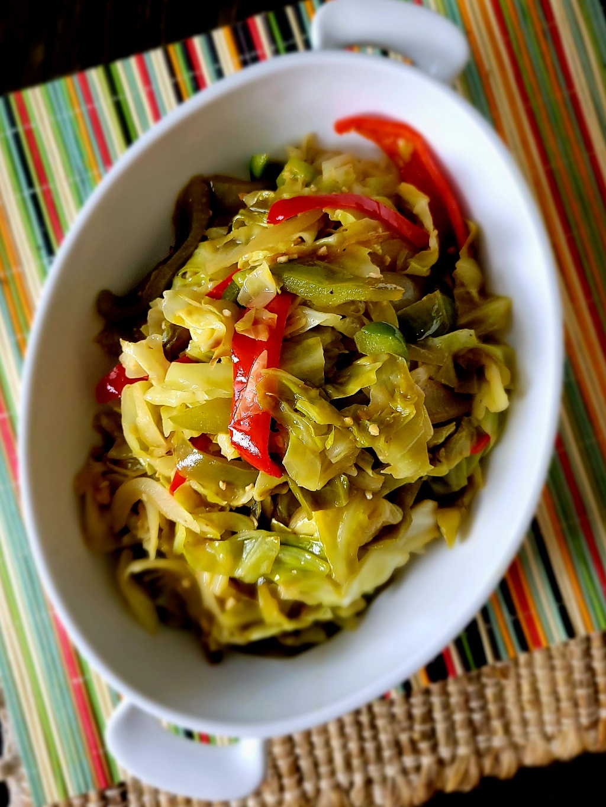

Easy Fried Cabbage

Easy to make fried cabbage makes a great side dish or throw some smoked sausage in there and make it a complete meal. Any way you have it, you'll be pleased.
Ingridients
- 2 tablespoons grapeseed oil
- 1 medium yellow onion, chopped
- 3 cloves garlic, chopped
- 2 teaspoons Cajun seasoning, or to taste, divided
- ½ red bell pepper, sliced
- ½ medium green bell pepper, sliced
- 1 medium head cabbage, thinly sliced
- 1 tablespoon butter, or more to taste (Optional)
- salt and ground black pepper to taste
Directions
- Heat grapeseed oil in a large cast iron skillet over medium heat. Add onions and cook until softened, about 3 minutes. Add garlic, stir, and cook until fragrant, 1 to 2 minutes. Season with 1 teaspoon Cajun seasoning and stir to combine.
- Mix in red and green bell peppers; cook for 1 to 2 minutes Add cabbage, remaining 1 teaspoon Cajun seasoning, and stir to combine. Add butter and stir until melted. Simmer cabbage until it reaches desired softness, about 15 minutes. Season with salt and pepper.
Return to Home Page